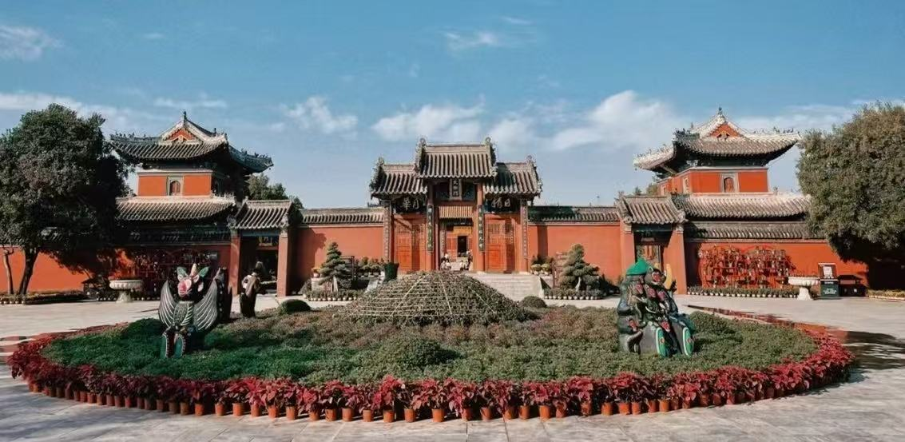

太昊伏羲陵景区位于河南省周口市淮阳区，是国家5A级旅游景区、全国重点文物保护单位，为祭祀人文始祖太昊伏羲氏的大型皇家陵庙建筑群。景区始建于春秋，历代不断修缮扩建，建筑格局依照先天八卦布局，规模宏大、古建密集，被誉为“天下第一陵”。
太昊伏羲陵融合祭祀文化、根祖文化、八卦文化与古建筑文化于一体，是全球华人寻根祭祖的重要圣地。园区古柏苍劲、殿宇庄严，既有北方古建筑的雄浑大气，又兼具园林雅致风光，适合文化研学、祭祖祈福、休闲观光。
📍 地址：河南省周口市淮阳区太昊伏羲陵文化旅游区
🎫 门票：成人常规门票40元；学生凭学生证半价；60周岁以上老人、1.4米以下儿童、现役军人、残疾人等凭有效证件免票
⏰ 开放时间
旺季（4月—10月）08:00-18:00；淡季（11月—3月）08:00-17:30，全年正常开放
🚗 交通指南
🍜 当地特色美食
经典一日游：午门 → 先天门 → 统天殿 → 显仁殿 → 伏羲陵冢 → 八卦台 → 独秀园 → 返程。
文化研学线：景区入口 → 历史碑林 → 古建群参观 → 祭祖祈福 → 龙湖周边休闲游览。
1. 作为祭祖圣地，游览需文明庄重，不大声喧哗，尊重传统文化。
2. 古建筑及碑刻禁止触摸、刻画，自觉保护文物与历史遗迹。
3. 农历二月二至三月三庙会期间人流量巨大，建议错峰出行。
4. 景区全程平坦，适合老人、儿童及家庭出游，步行无压力。
5. 建议搭配讲解游玩，深入了解伏羲文化、八卦起源与古建历史。
6. 春季游玩气候舒适，景色优美，是游览和祭祖的最佳时节。
春季风和日丽，古柏新绿，庙会文化氛围浓厚，适合祭祖踏青；夏季草木繁茂，园区阴凉静谧，避暑休闲舒适；秋季天高气爽，空气清新，静心游览体验极佳；冬日人少清幽，古陵肃穆，适合静心感受千年根祖文化。